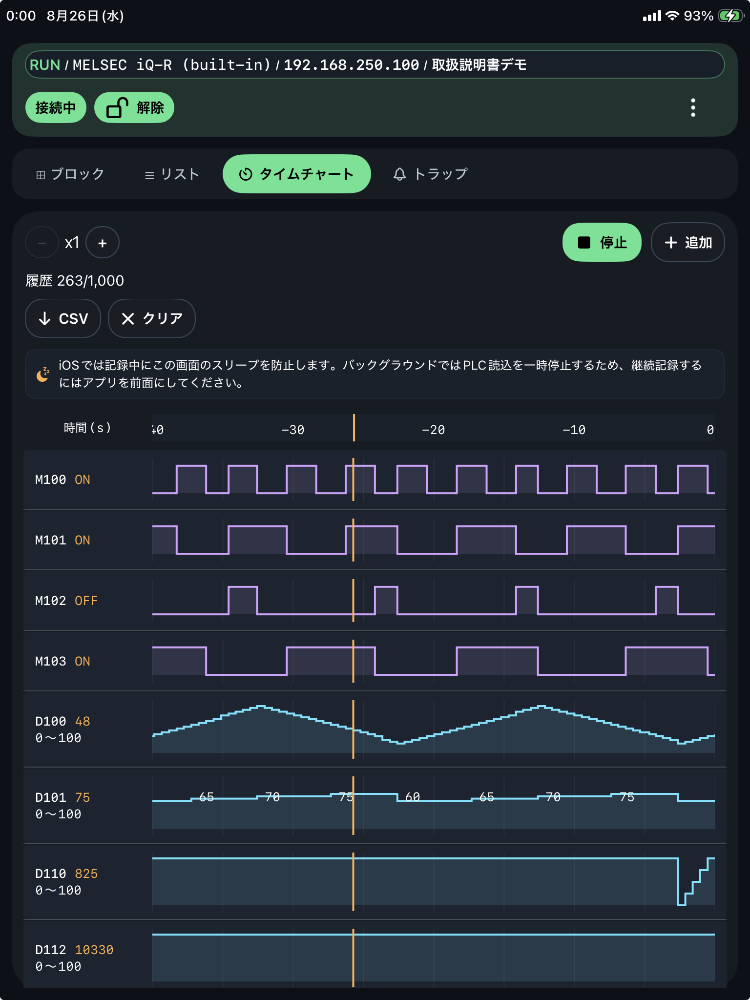

タイムチャート
タイムチャート
最大 20 チャンネルを 500 ms 周期で記録し、波形確認と CSV 書出を行います。
基本操作
- CH追加: 監視したいアドレスをチャンネルに追加します。
- REC: 記録を開始・停止します。
- CSV: 記録データを書き出します。
- クリア: 表示中の履歴を消去します。

記録条件
- REC は PLC 接続中かつ 1 チャンネル以上登録済みの場合に開始できます。
- REC 開始前の現在値は
--と表示されます。 - iOS では記録中に画面スリープを防止します。継続記録中は画面を表示したままにしてください。